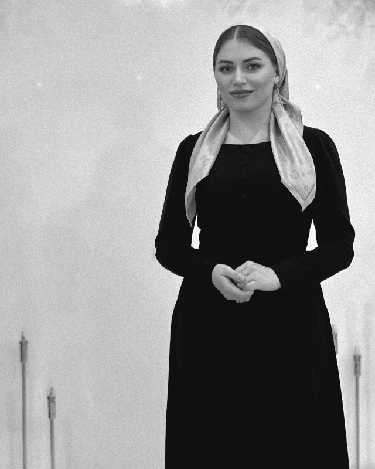

Министр образования и науки Молодёжного Правительства Чеченской Республики.
Учитель чеченского языка и литературы.
Руководитель методического объединения учителей чеченского языка и литературы МБОУ «СОШ №9 им. А.М. Цебиева» г. Грозного.
Руководитель театрального кружка.
«Пока я вижу, что мои уроки находят отклик в сердцах подрастающего поколения, я буду продолжать свое дело, открывая детям мир чеченской литературы и языка»
Здесь вы можете разместить подробную автобиографию, информацию о жизненном пути и ключевых этапах вашей карьеры.
Информация о педагогическом стаже, достижениях в школе, работе методического объединения и опыте преподавания.
Методические публикации, доклады и научно-исследовательские работы автора.
Информация о деятельности в качестве Министра образования и науки Молодежного Правительства Чеченской Республики, реализуемых проектах и инициативах.
Раздел для ваших авторских стихотворений, поэтических заметок и творческих работ, опубликованных в прессе.